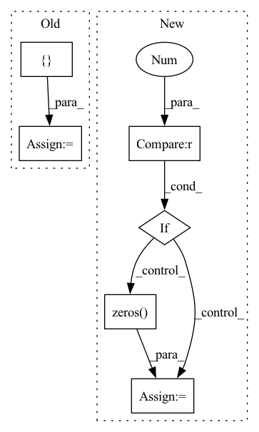

Pattern ID :17045

Before Change
output.fill(0)
Bc = np.zeros((3,3), f.dtype)
positions = [(1,2), (2,2), (2,1), (2,0)]
y,x = positions[direction]
Bc[y,x] = 1
_texture.cooccurence(f, output, Bc, symmetric)
After Change
assert output.dtype == np.int32, "mahotas.texture.cooccurence: output is not of type np.int32"
output.fill(0)
if len(f.shape) == 2:
Bc = np.zeros((3, 3), f.dtype)
y,x = _2d_deltas[direction]
Bc[y+1,x+1] = 1
else:
Bc = np.zeros((3, 3, 3), f.dtype)
y,x,z = _3d_deltas[direction]
Bc[y+1,x+1,z+1] = 1
_texture.cooccurence(f, output, Bc, symmetric)
return output
In pattern: SUPERPATTERN
Frequency: 4
Non-data size: 6
Instances
Fragment ID: 57176272
Project Name: luispedro/mahotas
Commit Name: d3e1a0327bbd287f805f92cffcb6e1c584ed61cc
Time: 2010-11-22
Author: lpc@cmu.edu
File Name: mahotas/texture.py
M Class Name: AnonimousClass
N Class Name: AnonimousClass
M Method Name: cooccurence(4)
N Method Name: cooccurence(4)
M Parent Class:
N Parent Class:
M File Name: mahotas/texture.py
N File Name: mahotas/texture.py
M Start Line: 169
M End Line: 181
N Start Line: 186
N End Line: 209
'>
Before Change
// IndexMappingTable: id-> chunk_id, offset_in_chunk
// a static table build by reorder.
self.id_to_chunk_ids_mapping = []
// CachedChunkTable: dict(slot_idx, (chunk_id, offset)) in self.cuda_partial_weight
self.cached_chunk_table = {}
def cuda_available_chunk_num(self):
After Change
weight = weight.cpu()
mod = weight.shape[0] % chunk_size
if mod > 0:
with torch.no_grad():
padding = torch.zeros(chunk_size - mod, weight.shape[1], device=weight.device, dtype=weight.dtype)
weight = torch.cat([weight, padding], dim=0)
self.cpu_weight = torch.chunk(weight.detach(), self.chunk_num, dim=0)
// IndexMappingTable: id-> chunk_id, offset_in_chunk
'>
Fragment ID: 57176273
Project Name: hpcaitech/cachedembedding
Commit Name: 5b9941f31e2adcbcd7a8bdb9aec48f65382feb52
Time: 2022-07-19
Author: fangjiarui123@gmail.com
File Name: recsys/modules/embeddings/freq_aware_embedding.py
M Class Name: ChunkCUDAWeightMgr
N Class Name: ChunkCUDAWeightMgr
M Method Name: __init__(4)
N Method Name: __init__(4)
M Parent Class: object
N Parent Class: object
M File Name: recsys/modules/embeddings/freq_aware_embedding.py
N File Name: recsys/modules/embeddings/freq_aware_embedding.py
M Start Line: 20
M End Line: 32
N Start Line: 21
N End Line: 39
'>
Before Change
phase_t = features_t * (1 + attention_t)
// (batch_size, lstm_channels * len_seq, h, w)
self.spatial_attention = torch.cat([attention_c, attention_t], 1)
pred_c = self.conv_lstm_c(phase_c) // (batch_size, 2, h, w)
pred_t = self.conv_lstm_t(phase_t) // (batch_size, 2, h, w)
After Change
pred_c = self.conv_lstm_c(phase_c) // (batch_size, 2, h, w)
// (batch_size, lstm_channels * (len_seq - len_local), h, w)
if self.len_global > 0:
hidden_list_t = hidden_list[:, self.lstm_channels * self.len_local:]
features_t = features[:, self.lstm_channels * self.len_local:]
attention_t = self.concat_conv_t(features_t, hidden_list_t)
phase_t = features_t * (1 + attention_t)
pred_t = self.conv_lstm_t(phase_t) // (batch_size, 2, h, w)
else:
pred_t = torch.zeros((batch_size, self.output_dim, self.len_row, self.len_column)).to(self.device)
if self.ext_dim > 0:
time_aware = self.time_aware_extnn(y_ext) // (batch_size, 1)
'>
Fragment ID: 57176277
Project Name: libcity/bigscity-libcity
Commit Name: bc924e2f6f2646b24ea62db7e150eab2012e6a1c
Time: 2021-04-27
Author: 35984903+aptx1231@users.noreply.github.com
File Name: trafficdl/model/traffic_flow_prediction/ACFM.py
M Class Name: ACFM
N Class Name: ACFM
M Method Name: forward(2)
N Method Name: forward(2)
M Parent Class: AbstractTrafficStateModel
N Parent Class: AbstractTrafficStateModel
M File Name: trafficdl/model/traffic_flow_prediction/ACFM.py
N File Name: trafficdl/model/traffic_flow_prediction/ACFM.py
M Start Line: 526
M End Line: 550
N Start Line: 529
N End Line: 555